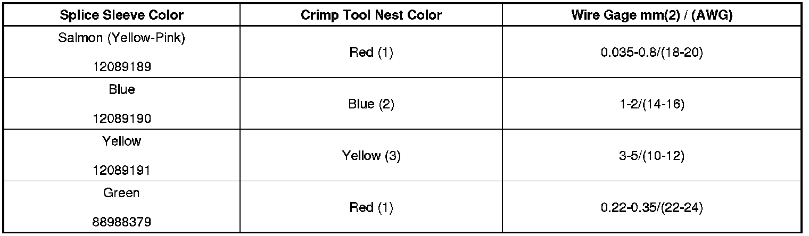
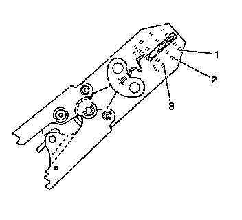
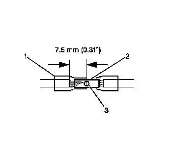
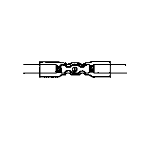
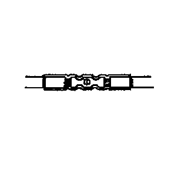

SIR/SRS Wiring Repairs
SIR/SRS Wiring Repairs
Tools Required
J-38125 Terminal Repair Kit
The Supplemental Inflatable Restraint (SIR) System/Supplemental Restraint System (SRS) requires special wiring repair procedures due to the sensitive nature of the circuitry. Follow the specific procedures and instructions when working with the SIR/SRS, and the wiring components, such as connectors and terminals.
Important: Do not use the terminals in the kit in order to replace damaged SIR/SRS system terminals. Use either an SIR/SRS pigtail or a terminated lead from the SIR Repair Kit Tray.
The tool kit J-38125 contains the following items:
* DuraSeal splice sleeves, in order to repair the SIR/SRS wiring
* A special crimping tool
* A heat torch
* An instruction manual
The DuraSeal splice sleeves have the following 2 critical features:
* A special heat shrink sleeve environmentally seals the splice. The heat shrink sleeve contains a sealing adhesive inside.
* A cross hatched (knurled) core crimp provides the necessary low resistance contact integrity for these sensitive, low energy circuits.
The J-38125 also serves as a generic terminal repair kit. The kit contains the following items:
* A large sampling of common electrical terminals
* The correct tools in order to attach the terminals to the wires
* The correct tools in order to remove the terminals from the connectors
SIR/SRS Connector Repair (Plastic Body and Terminal Metal Pin)
The terminals in the SIR/SRS system are made with a special plating. This plating provides the necessary contact integrity for the sensitive, low energy circuits. Use theJ-38125 SIR/SRS Terminal Repair Kit for repairing SIR/SRS terminals and connectors. Do not substitute any other terminals for those in the repair kit.
The J-38125 SIR/SRS Terminal Repair Kit contains:
* Various terminated leads for sensing and diagnostic module (SDM) terminal replacement
* Various connector positive assurance (CPA) locks for SIR/SRS connectors
* Base of steering column pigtail connectors part number 12085514
* Yellow vinyl electrical tape
Pigtail repair packs are available for SIR/SRS connectors with eight or less terminals. Only the connector body is available for connectors with more than eight terminals. The terminated leads in the J-38125 SIR/SRS Terminal Repair Kit can be used to replace damaged terminals when replacing the connector body.
SIR/SRS Component Wire Pigtail Repair
Important: Do not make wire, connector, or terminal repairs on components with wire pigtails.
A wire pigtail is a wire or wires attached directly to the device, not by a connector. If a wiring pigtail is damaged, you must replace the entire component, with pigtail. The inflatable restraint steering wheel module coil is an example of a pigtail component.
SIR/SRS Wire Repair
Important: Refer to Wiring Repairs (Component Tests and General Diagnostics) in order to determine the correct wire size for the circuit you are repairing. You must obtain this information in order to ensure circuit integrity.
If any wire except the pigtail is damaged, repair the wire by splicing in a new section of wire of the same gage size (0.5 mm, 0.8 mm, 1.0 mm etc.). Use the DuraSeal splice sleeves and splice crimping tool from the J-38125 . Use the following wiring repair procedures in order to ensure the integrity of the DuraSeal splice sleeves.

Important: You must perform the following procedures in the listed order. Repeat the procedure if any wire strands are damaged. You must obtain a clean strip with all of the wire strands intact.
1. Open the harness by removing any tape:
* Use a sewing seam ripper, available from sewing supply stores, in order to cut open the harness in order to avoid wire insulation damage.
* Use the DuraSeal splice sleeves on all types of insulation except tefzel and coaxial.
* Do not use the crimp and DuraSeal splice sleeve to form a splice with more than 2 wires coming together.
2. Cut as little wire off the harness as possible. You may need the extra length of wire in order to change the location of a splice.
Adjust splice locations so that each splice is at least 40 mm (1.5 in) away from the other splices, harness branches, or connectors.
3. Strip the insulation:
* When adding a length of wire to the existing harness, use the same size wire as the original wire.
* Perform one of the following items in order to find the correct wire size:
- Find the wire on the schematic and convert the metric size to the equivalent AWG size.
- Use an AWG wire gage.
- If you are unsure of the wire size, begin with the largest opening in the wire stripper and work down until achieving a clean strip of the insulation.
* Strip approximately 7.5 mm (0.313 in) of insulation from each wire to be spliced.
* Do not nick or cut any of the strands. Inspect the stripped wire for nicks or cut strands.
* If the wire is damaged, repeat this procedure after removing the damaged section.
4. Select the proper DuraSeal splice sleeve according to the wire size. Refer to the above table at the beginning of the repair procedure for the color coding of the DuraSeal splice sleeves and the crimp tool nests.

5. Use the Splice Crimp Tool from the J-38125 to crimp DuraSeal splice sleeve. In order to position the DuraSeal splice sleeve in the proper color nest of the Splice Crimp Tool. The crimp tool has three nests, 1 is for the salmon and green splice sleeve, 2 is for the blue splice sleeve, and 3 is for the yellow splice sleeve.

6. Place the DuraSeal splice sleeve in the nest. Ensure that the crimp falls midway between the end of the barrel and the stop. The sleeve has a stop (3) in the middle of the barrel (2) in order to prevent the wire (1) from going further. Close the hand crimper handles slightly in order to firmly hold the DuraSeal splice sleeve in the proper nest.

7. Insert the wire into the splice sleeve barrel until the wire hits the barrel stop.
8. Tightly close the handles of the crimp tool until the crimper handles open when released.
The crimper handles will not open until you apply the proper amount of pressure to the DuraSeal splice sleeve. Repeat steps 4 and 5 for the opposite end of the splice.

9. Using the heat torch, apply heat to the crimped area of the barrel.
10. Gradually move the heat barrel to the open end of the tubing:
* The tubing will shrink completely as the heat is moved along the insulation.
* A small amount of sealant will come out of the end of the tubing when sufficient shrinkage is achieved.
Connector Position Assurance (CPA)
The connector position assurance (CPA) is a small plastic insert that fits through the locking tabs of a connector. CPAs are used in all SIR System connectors and also in some connectors of other systems. The CPA ensures that the connector halves cannot vibrate apart. You must have the CPA in place in order to ensure good contact between the mating terminals of a connection.
Terminal Position Assurance (TPA)
The terminal position assurance (TPA) insert resembles the plastic combs used in the control module connectors. The TPA keeps the terminal securely seated in the connector body. Do not remove the TPA from the connector body unless you remove a terminal for replacement.